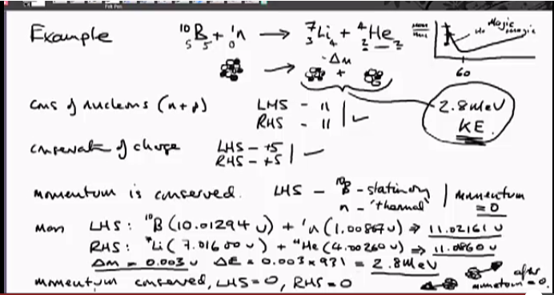

Index
- Section 0
- Section 1 - Nuclear Basics
- Lecture 1.0 - Learning outcomes and technical tour
- 1.1 Atoms and Nuclei
- 1.2 - Nuclear Structure & Nuclear Reactions
- 1.3 Isotopes and Radioactivity
- 1.4 Radiation and Interactions with MAtter
- Section 2 - Neutrons and Fission
1.2 - Nuclear Structure & Nuclear Reactions
Binding Energy curve - binding energty increases until Fe then slowly decreasesLower values not smooth curve
Shell Theory
• “Shell Model” was derived to explain anomilies in binding energy curve at lower mass numbers. Has evidence in other areas to support
• Shell Theory applies to protons and neutrons separately. paralel systems following same rules.
• Magic numbers appear when protons or neutrons fill a “shell” within the atom
• “magic magic” occurs when both neutrons and protons fill the shell.
• magic numbers are very stable, magic magic even more so.
• These nuclei have higher binding energy.
• Useful for radiation calcs.
Nuclear reactions and Laws of Conservation
Fundamental Laws
1. Number of Nucleons are conserved (n+p is the same after the reaction)
2. Charge is Conserved - total charge before hand is equal to total after reaction
3. Conservation of momentum - just like classical physics
4. Conservation of mass and energy - governed by special relativity. (mass can become energy and vise versa)
Example

Conservation of charge - count protons as +1 charge each.